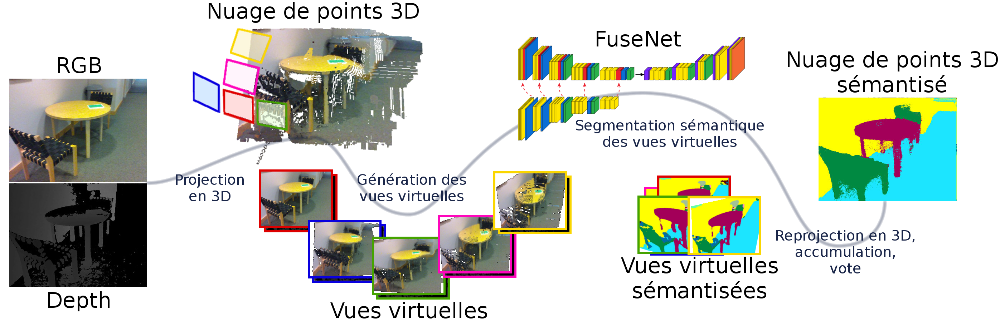

Problème dans l'utilisation de Impress.js, est-ce que le navigateur est correct et que les fichiers sont disponibles ?
Reconnaissance visuelle robuste par réseaux de neurones dans des scénarios d’exploration robotique.
Détecte-moi si tu peux !
Soutenance de thèse de
Joris GUERRY
pour l'obtention du grade de Docteur en Informatique de l'Université Paris-Saclay
David Filliat
Bertrand Le Saux
Directeur de thèse
Encadrant
La reconnaissance visuelle,
quelques exemples
Pour un humain, une image c'est...
un environnement,
un sujet,
un point de vue,
un instant figé,
une histoire,
des souvenirs,
En fait un humain ne reconnait pas un objet, mais il reconnait un concept.
Plus qu'un objet, c'est un concept.
L'humain reconnaît des concepts.
Par exemples ici nous avons 3 styles de chaises différentes.
... mais pour les robots
Tortoise (Grey Walter - 1950)
Asimo (Honda - 2000)
Handle (Boston Dynamics - 2016)
Comment faire le lien entre les concepts des hommes et l'informatique embarquée des robots ? C'est là qu'intervient ce qu'on appelle la Vision par ordinateur ou Computer Vision.
Computer vision is concerned with [...] automatic visual understanding.
The British Machine Vision Association and Society for Pattern Recognition
La vision par ordinateur, en utilisant un anglicisme très pratique, c'est l'art de sémantiser des images de façon automatique, c'est à dire donner du sens aux images sans l'intervention de l'homme.
Transition : Alors qu'est-ce que ça veut dire donner du sens au image ? Et bien tout d'abords intéressons nous rapidement à qu'est-ce que c'est qu'une image ?
Qu'est-ce qu'une image ?
Qu'est-ce qu'une image ?
Ce que l'on peut voir ici c'est la représentation d'une image sous sa forme RGB. Elle est utile car nos yeux sont sensibles à ces trois couleurs et ainsi nous avons directement accès à l'information nécessaire pour générer cette image sur un écran.
Un espace de représentation pour une tâche donnée
Les tâches de la vision par ordinateur
Alors, il existe d'autres tâches de la vision par ordinateur non montrées ici. comme des tâches géométriques mais nous nous sommes intéressés aux taches sémantiques.
Les tâches de la vision par ordinateur
"YOLO9000: better, faster, stronger." (2016)
Redmon and Farhadi
"Segnet: A deep conv. encoder-decoder architecture for image segmentation." (2015)
Badrinarayanan, Kendall and Cipolla
"Mask r-cnn." (2017)
He, Gkioxari, Dollàr and Girshick
la brique de base c'est la classification. que ce soit en détection ou en segmentation, il arrive toujours le moment où on doit prendre une décision sur la classe de l'entité considérée. C'est pourquoi je vous propose de réfléchir plus attentivement à
la tâche de classification.
La classification
La tâche de classification consiste à partir d'une image en représentation RGB et d'arriver à l'attribution d'une classe. Dit autrement, on part d'un espace en grande dimension que sont l'espace des images pour arriver à estimer un vecteur qui mesure
l'appartenance aux N classes. DOnc on arrive dans un espace en N dimension.
Autrement dit on cherche à partitionner l'espace RGB en N classes. Or pour faire des partitions on mesure les similarités entre les vecteurs d'un espace et le problème c'est que en grande dimension la notion de similarité, autrement dit de distance, perd
de sa valeur.
En effet, chaque dimension est une occasion de plus pour deux vecteurs de s'éloigner (exemple des villes). --> Du coup on cherche à diminuer la taille de l'espace de représentation avant de commencer a faire du partitionnement.
Un réseau de neurone : GoogleNet
"Going deeper with convolutions." (CVPR 2015)
Szegedy et al.
↗ couches
↗ paramètres
↗ opérations
↗ le temps de calcul
↗ la mémoire nécessaire
Des contraintes
L'adaptation de domaine
utiliser plusieurs experts complémentaires
augmenter les sources d'informations
accumuler différentes observations
↳Fusion
Reconnaissance visuelle robuste par réseaux de neurones dans des scénarios d’exploration robotique.
Détecte-moi si tu peux !
Sélection d'algorithmes de classification
Approche multimodale pour la détection
Approche multivue pour la segmentation
Reconnaissance visuelle robuste par réseaux de neurones dans des scénarios d’exploration robotique.
6 méthodes de classification : HoG+SVM et 5 CNNs (AlexNet, LeNet, GoogleNet, SqueezeNet, VGG16)
Cas applicatif n°1
Corrélation Méthodes/Jeux de données
Cas n°1 : Résultats quantitatifs
Méthode
Précision moyenne (%)
bvlc_GoogleNet
24,7
VGG_cnn_s
23,7
an_cifar10_gs
18,3
an_cifar10_rgb
18,2
bvlc_AlexNet
17,7
svm_mountain_forest
17
SqueezeNet
16,8
ln_cifar10_rgb
14
ln_cifar10_gs
13,7
ln_caltech101_gs
12,5
svm_caltech101
11,3
ln_cifar100_gs
11,3
ln_sun3d_gs
11,3
ln_caltech256_gs
9,3
svm_cifar10
9
an_sun3d_rgb
8
svm_caltech256
6,3
svm_sun3d
5,7
svm_cifar100
1,8
Méthode
Précision moyenne (%)
Oracle
77,8
Réseau de Confiance [SqueezeNet]
43,0
Réseau de Confiance [LeNet]
36,3
Réseau de Confiance [AlexNet]
23,7
Cas applicatif n°2
1 seul jeu de données : ImageNet 4 méthodes de classification :AlexNet, GoogleNet, SqueezeNet, VGG16
Cas applicatif n°2
Réseau de confiance "DoFeaNN" : Domain Features Neural Network
Cas applicatif n°2
Méthode
Top-1 score (%)
Temps de calcul cumulés
AlexNet
83,2
41,98 s
GoogleNet
82,3
67,16 s
VGG
83,9
73,88 s
SqueezeNet
80,4
100,74 s
Oracle
93,2
476,43 s
Réseau de confiance "DoFeaNN" + méthodes choisies
83,8
129,4 s
Conclusion I - Sélection d'algorithmes
Le concept de réseau de confiance a du potentiel
Deux situations :
données facilement séparables (cas 1)
données difficilement séparables (cas 2)
Structure DoFeaNN inadaptée
Reconnaissance visuelle robuste par réseaux de neurones dans des scénarios d’exploration robotique.
Détecte-moi si tu peux !
Sélection d'algorithmes de classification
Approche multimodale pour la détection
Approche multivue pour la segmentation
Image RGBD
Détecteur RGBD
Gating Network
"Choosing smartly: Adaptive multimodal fusion for object detection in changing
environments." IROS (2016)
Mees, Eitel and Burgard
Détecteur RGBD
Notre objectif
Détecteur RGBD
Faster RCNN
"Faster R-CNN: Towards real-time object detection with region proposal networks."
NIPS (2015)
Ren, Shaoqing, et al.
Détecteur RGBD
Notre objectif : R&M CNN
Nos méthodes :
Application sur 3 jeux de données RGBD
RGBD People
InOutdoor RGBD People
ONERA.ROOM
3000 images
8600 images
35000 images
Métriques
Résultats : RGBD People
Fusion en X
Méthode
Source
EER
HOD [Spinello et al. 2012]
D
56.3
HGE [Spinello et al. 2012]
RGB-D
87.4
Gating Net. [Mees et al. 2016]
RGBD-OF
89.3
Faster RCNN [Ren et al. 2015]
D
98.3
Faster RCNN [Ren et al. 2015]
RGB
98.4
U [Guerry et al. 2017]
RGB-D
98.4
Y [Guerry et al. 2017]
RGB-D
98.3
X [Guerry et al. 2017]
RGB-D
98.6
Résultats : InOutDoor RGBD People
Fusion en U
Méthode
Source
mAP
EER
Gating Net [Mees et al. 2016]
RGB-D
80,4
–
Faster RCNN [Ren et al. 2015]
RGB
91,9
90,1
Faster RCNN [Ren et al. 2015]
D
84
84,8
U [Guerry et al. 2017]
RGB-D
94,4
92,1
X [Guerry et al. 2017]
RGB-D
94,3
92,4
Y [Guerry et al. 2017]
RGB-D
90,2
90,1
U*[Guerry et al. 2017]
RGB-D
84
84,8
X*[Guerry et al. 2017]
RGB-D
84,1
84,8
Y*[Guerry et al. 2017]
RGB-D
n.a
n.a
*ablation de la couleur
Nouveau jeu de données : ONERA.ROOM
35000 images annotés
Trois niveaux de difficultés ("Easy","Average", "Hard")
+ de variété
Nouveau jeu de données : ONERA.ROOM
"Look At This One" Detection sharing between modality-independent classifiers for
robotic discovery of people (ECMR 2017)
Guerry, Le Saux and Filliat
Résultats : ONERA.ROOM
Faster RCNN RGB Fusion en X
Méthode
Source
mAP
EER
Faster RCNN [Ren et al. 2015]
RGB
91,2
91
Faster RCNN [Ren et al. 2015]
Depth
66,9
68,3
U [Guerry et al. 2017]
RGB-D
90,6
88
X[Guerry et al. 2017]
RGB-D
91,3
89,1
Y [Guerry et al. 2017]
RGB-D
87,1
90,3
U*[Guerry et al. 2017]
RGB-D
67
68,3
X*[Guerry et al. 2017]
RGB-D
66,7
68,1
Y*[Guerry et al. 2017]
RGB-D
n.a
n.a
*ablation de la couleur
Analyse de résultats
Conclusion II - Détection multimodale
trois nouvelles architectures de détection (U,X,Y)
nouveaux résultats de référence sur 2 jeux de données RGBD :
RGBD People
InOutDoor RGBD People
création et mise à disposition d'un nouveau jeu de données RGBD complexe : ONERA.ROOM
Reconnaissance visuelle robuste par réseaux de neurones dans des scénarios d’exploration robotique.
Détecte-moi si tu peux !
Sélection d'algorithmes de classification
Approche multimodale pour la détection
Approche multivue pour la segmentation
Image RGBD
Jeu de données : SUNRGBD
De SnapNet à SnapNet-R
SnapNet-R : stratégie d'observation
SnapNet-R : stratégie d'observation
SnapNet-R
Résultats : SUNRGBD (37 classes)
Résultats : SUNRGBD (37 classes)
Expérience
Source
Précision
Précision Moyenne
IoU moyen
LSTM-CF [Li et al. 2016]
RGB
–
48,1
–
FCN 8s [Long et al. 2015]
RGB
68,2
38,4
27,4
Bayesian SegNet [Kendall et al. 2015]
RGB
71,2
45,9
30,7
Context-CRF [Lin et al. 2017]
RGB-D
78,4
53,4
42,3
3D Graph Neural Network [Qi et al. 2017]
RGB-D
–
57,0
45,9
DFCN-DCRF [Jiang et al. 2017]
RGB-D
76,6
50,6
39,3
FuseNet SF5 [Hazirbas et al. 2016]
RGB-D
76,3
48,3
37,3
SnapNet-R [Guerry et al. 2017]
RGB-D
78,04
58,13
39,61
Résultats : NYUDv2 (40 et 13 classes)
40 classes
Expérience
P
PM
mIoU
RCNN [Girshick et al. 2014] (RGB-HHA)
60.3
35.1
28.6
FCN 16s [Long et al. 2015] (RGB-HHA)
65.4
46.1
34.0
[Eigen et al. 2015] (RGB-D-N)
65.6
45.1
34.1
Context-CRF [Lin et al. 2017] (RGB-D)
67.6
49.6
37.1
3D Graph Neural Network [Qi et al. 2017] (RGB-D)
–
55,7
43,1
FuseNet SF3 [Ma et al. 2017] (RGB-D)
66.4
44.2
34.0
MVCNet-MP [Ma et al. 2017](RGB-D)
70.66
51.78
40.07
FuseNet SF5 [Hazirbas et al. 2016] (RGB-D)
62.19
48.28
31.01
SnapNet-R [Guerry et al. 2017] (RGB-D)
69.20
60.55
38.33
13 classes
Expérience
P
PM
mIoU
Couprie et al.[Couprie et al. 2013] (RGB-D)
52.4
36.2
–
[Hermans et al. 2014] (RGB-D)
54.2
48.0
–
SceneNet[Handa et al. 2016] (DHA)
67.2
52.5
–
[Eigen et al. 2015](RGB-D-N)
75.4
66.9
52.6
FuseNet SF3 [Ma et al. 2017] (RGB-D)
75.8
66.2
54.2
MVCNet-MP [Ma et al. 2017] (RGB-D)
79.13
70.59
59.07
FuseNet SF5 [Hazirbas et al. 2016] (RGB-D)
78.41
72.07
56.33
SnapNet-R [Guerry et al. 2017] (RGB-D)
81.95
77.51
61.78
Conclusion III - Segmentation multivue
Adaptation de SnapNet à des données RGBD monovues
nouvelle stratégie d'observation
retrait du maillage
changement de structure sémantique : FuseNet
Nouveaux résultats de référence sur :
SUNRGBD 37 classes
NYUDv2 40 classes
NYUDv2 13 classes
Reconnaissance visuelle robuste par réseaux de neurones dans des scénarios d’exploration robotique.
Détecte-moi si tu peux !
Conclusion
Sélection d'algorithmes de classification
2D
Approche multimodale pour la détection
2.5D
Approche multivue pour la segmentation
3D
Conclusion
I
Concept de Réseau de Confiance
Fonctionnel sous certaines conditions
Potentiel inexploité
II
Nouvelles architectures multimodales
Fusion simple de l'information
Nouvelles références de détection RGBD
III

Adaptation d'une méthode multivue 3D
Nouvelles références de segmentation RGBD
Dissémination
Sélection d'algorithmes de classification
Journée des Jeunes Chercheurs en Robotique 2015 :[poster] Reconnaissance d’objets pour l’exploration robotique Joris GUERRY
Journée des Jeunes Chercheurs en Robotique 2016 :[organisation & présentation] Sélection d'algorithmes par réseaux de neurones Joris GUERRY
Reconnaissance des Formes et l'Intelligence Artificielle 2016, workshop : "Apprentissage profond pour la perception[...]" :[résumé & présentation] Sélection d’algorithmes de classification par réseau de neuronesJoris Guerry, Bertrand Le Saux, David Filliat
Approche multimodale pour la détection
Eurographics Workshop on 3D Object Retrieval 2017 :[article collaboratif] SHREC’17 Track: 3D Hand Gesture Recognition Using a Depth and Skeletal Dataset Q. De Smedt, H. Wannous, J.-P. Vandeborre, J. Guerry, B. Le Saux, D. Filliat
Colloque du Groupement de Recherche en Traitement du Signal et des Images 2017 :[article & poster] RCNN RGBD pour la détection de personnes en conditions difficilesJoris Guerry, Bertrand Le Saux, David Filliat
European Conferance on Mobile Robotics 2017 :[article & poster] “LATO”, Detection sharing between modality-independent classifiers for robotic discovery of people Joris Guerry, Bertrand Le Saux, David Filliat
Approche multivue pour la segmentation
International Conference on Computer Vision 2017, Workshop: "3D Reconstruction meets Semantics" :[article] SnapNet-R: Consistent 3D Multi-View Semantic Labeling for Robotics Joris Guerry, Alexandre Boulch, Bertrand Le Saux, Julien Moras, Aurelien Plyer, David Filliat
Computers and Graphics 2017 :[Journal][SOUMIS] “SnapNet”, 3D point cloud semantic labeling with 2D deep segmentation networks Alexandre Boulch, Joris Guerry, Bertrand Le Saux, Nicolas Audebert
Perspectives
Perspectives
Unification des contributions
Perspectives
SnapNet-R "Scene-aware"
SnapNet-R :
génère N observations sémantisées
accumule les résultats en 3D
sélectionne la classe de chaque point par vote
Encodage tensoriel
SHREC’17 Track: 3D Hand Gesture Recognition Using a Depth and Skeletal Dataset
(Eurographics 2017)
Q. De Smedt, H. Wannous, J.-P. Vandeborre, J. Guerry, B. Le Saux, D. Filliat
Réseau de neurones "récurrents"
Perspectives
Intégration robotique
Réseaux de neurones binaires
Xnor-net: Imagenet classification using binary convolutional neural networks.
(ECCV 2016)
Rastegari et al.
Aspect temporel
tracking des objets détectés + détections localisées
SLAM sémantique (SnapNet)
Apprentissage profond bayésien
Bayesian segnet: Model uncertainty in deep convolutional encoder-decoder
architectures for scene understanding. (2015)
Kendall et al.


 +7.4 points /AlexNet et +4.9 points /LeNet
+7.4 points /AlexNet et +4.9 points /LeNet